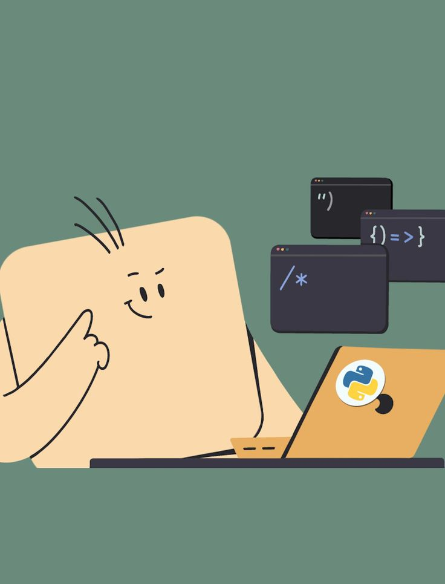
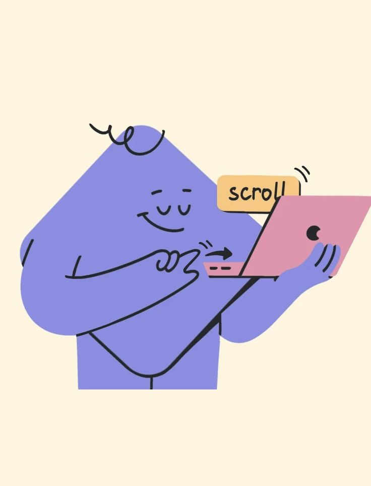

Zero setupRun anywhere, instantly
Run real Python directly in your browser with Pyodide. No downloads, no local virtual environments, and no terminal configuration needed.
In-browser runtime
A focused place to learn Python by solving problems. Practice one topic at a time, move through three difficulty levels, and get better at writing code from scratch.
Already have an account? Login
No setup, instant feedback, and progress that stays visible — so you return the next day.

Zero setupRun real Python directly in your browser with Pyodide. No downloads, no local virtual environments, and no terminal configuration needed.
 Instant feedback
Instant feedback
See sample and hidden edge-case tests evaluate the instant you run. Pinpoint bugs right away with clear stdout and stack trace diagnostics.
Your solved questions, daily streaks, and topic completion percentages persist safely in local storage. Completely private with zero sign-up wall.
The product is built around the part that tutorials often miss: actually sitting down and writing the code yourself.

Topic by topicFocus on one concept at a time. Advance through 21 curated topics spanning foundational syntax, collections, functional helpers, and OOP.
Build muscle memory on Basic exercises, combine mechanisms at Intermediate level, and solve full algorithmic challenges in Advanced.
Read the objective, write your own function from scratch, run against rigorous test cases, and mark completed when you truly understand it.
The habits and thinking that remain after syntax fades — writing from scratch, step by step.
Turn an idea directly into working code without copying every line. Open a blank file and structure complete solutions independently.
Break big, intimidating requirements into decisions, loops, checks, and pure functions before writing a single line.
See steady, measurable progress instead of guessing if you're improving. Test cases give you undeniable proof of mastery.
Move naturally toward real application architecture: custom exceptions, file input/output, and object-oriented patterns.
Pick a topic, solve a few problems, and build the habit of writing Python yourself.